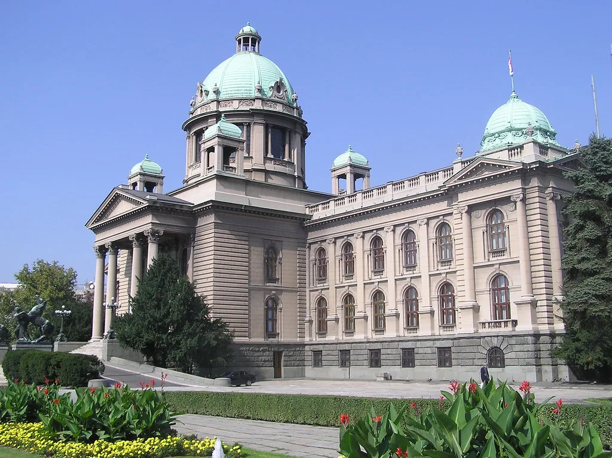

2차 종합특검 연장법, 필리버스터 끝에 국회 통과
2차 종합특검의 수사 기간을 연장하는 특검법 개정안이 21일 국회 본회의를 통과했다. 더불어민주당 등 범여권은 국민의힘이 전날부터 이어온 필리버스터를 표결로 종결한 뒤, 윤석열·김건희에 의한 내란·외환 및 국정농단 행위의 진상규명을 위한 특별검사 임명 등에 관한 법률 개정안을 의결했다. 본회의는 여야 의원들이 팽팽하게 맞선 가운데 밤늦게까지 이어졌고, 표결 결과 발표 직후 본회의장 안팎에서는 여야의 반응이 극명하게 엇갈렸다.
이번 개정안의 핵심은 수사 기간 연장 방식이다. 기존에는 1회 30일 연장만 가능했지만, 개정안은 이를 2회 각 30일씩, 최장 60일까지 추가로 연장할 수 있도록 했다. 아울러 특검에 파견되는 공무원의 인원 상한과 파견 가능 기관의 범위도 함께 확대하는 내용을 담았다. 이를 통해 특검이 보다 폭넓은 인력을 활용해 남은 수사를 진행할 수 있는 법적 기반이 마련됐다는 평가가 나온다.

2차 종합특검은 지난 2월 출범해 내란·김건희·채상병 등 이른바 3대 특검이 정해진 기간 안에 마무리하지 못한 의혹들을 이어받아 수사해왔다. 세 갈래로 나뉘어 있던 수사를 하나의 조직으로 통합해 진행해온 만큼, 다루는 사건의 폭도 넓고 관련자도 많아 수사에 상당한 시간이 소요돼왔다. 법안 통과에 따라 특검의 활동 기한은 당초 종료 예정이던 오는 24일에서 다음 달 23일까지로 연장된다. 연장된 기간 동안 특검은 그간 진행해온 수사를 이어가며 아직 결론이 나지 않은 의혹들을 규명하는 데 주력할 것으로 전해졌다.
국민의힘은 본회의 상정 직후부터 무제한 토론에 나서며 강하게 반발했다. 여당이 수사 기간을 계속 늘리는 것은 특검 제도 본래의 취지를 벗어나 상시적인 사정 기구를 만들려는 시도라는 게 야당 측 논리였다. 야당 의원들은 밤새 토론대에 올라 법안의 문제점을 지적하며 시간을 끌었지만, 국회법상 필리버스터는 일정 시간이 지나면 종결 표결이 가능해 법안 처리 자체를 막지는 못했다.

여당은 특검이 규명해야 할 핵심 의혹들이 아직 남아 있는 상황에서 활동이 종료되면 그간의 수사 성과가 사장될 수 있다고 강조해왔다. 이번 통과로 특검은 남은 의혹에 대한 수사를 이어갈 시간을 추가로 확보하게 됐다. 여권 관계자들은 이번 연장이 진상 규명을 마무리 짓기 위한 최소한의 조치였다는 점을 거듭 강조하고 있다.
법안 처리 과정에서 여야가 정면으로 충돌한 만큼, 정치권에서는 특검 수사 결과가 향후 나올 때마다 여야 간 공방이 재점화될 가능성이 크다는 관측이 나온다. 특히 야당은 이번 표결 처리 방식 자체를 문제 삼아 향후 국회 운영 전반에서 여당을 향한 견제 수위를 높일 것으로 예상된다.
연장된 기간 동안 특검이 어떤 수사 성과를 내놓을지에 따라 하반기 정국의 흐름도 달라질 것으로 보인다. 특검 수사가 마무리 국면에 접어드는 다음 달 말까지, 관련 의혹을 둘러싼 정치권의 긴장은 계속될 전망이다. 여야 모두 이번 연장을 계기로 각자의 정치적 명분을 강화하려는 움직임을 보이고 있어, 특검 수사 결과 발표 시점마다 국회가 다시 요동칠 가능성도 제기된다. 국민 여론이 이번 논쟁을 어떻게 받아들일지도 향후 정국 주도권을 가늠하는 중요한 변수가 될 전망이다.